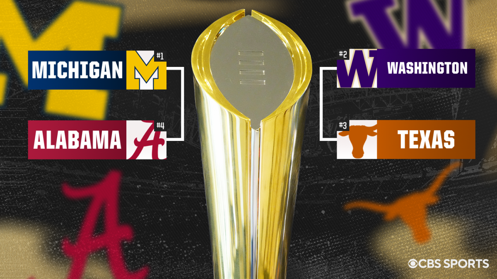

College Football Recruiting Analysis

Image Source: CBS Sports
This project aims to examine how the Michigan, Washington, Texas, and Alabama football programs recruited talent across the country for the 2023 season, using a combination of GIS, SQL, and Tableau to analyze player hometowns, team distribution, and recruiting strength. The analysis provides a data-driven look into the national and regional recruiting strategies of the 2023 CFP teams, offering insights into where top talent comes from and how competitive different regions are in the recruiting landscape. Player data was collected via the CollegeFootballData API and 247Sports, then geolocated using Geopy to map hometowns.
SQL Queries
After cleaning and importing the data into PostgreSQL, SQL queries provided insights into each school's recruiting footprint, including the average distance of recruits, key metropolitan regions, and competition levels within those areas. Take a look at one of my example queries below used to calculate the distance from each player's hometown to the school they attended:
-- This query calculates how far the student's hometown is from
-- the school they are attending
WITH school_locations AS (
SELECT 'Texas' as team, 30.2849 as lat, -97.7341 as lon
UNION SELECT 'Michigan', 42.2808, -83.7430
UNION SELECT 'Alabama', 33.2098, -87.5692
UNION SELECT 'Washington', 47.6553, -122.3035
)
SELECT
p.team,
p.name,
p.hometown,
p.state,
CAST(
3959 * 2 * asin(
sqrt(
pow(sin(radians(s.lat - p.latitude) / 2), 2) +
cos(radians(p.latitude)) * cos(radians(s.lat)) *
pow(sin(radians(s.lon - p.longitude) / 2), 2)
)
) AS NUMERIC(10,1)
) as distance_miles
FROM players p
JOIN school_locations s ON p.team = s.team
WHERE p.latitude IS NOT NULL
ORDER BY distance_miles DESC;
For a full view of the dataset and SQL queries used to analyze the data, check out the SQL section of this project's GitHub repository here:
Recruiting Footprint Maps
Using GIS tools, I mapped recruits and connected them to their schools with geodesic lines, while 1-hour isochrones visualized local recruiting reach. I created a nationwide heatmap that highlights talent hotspots, and standard deviation ellipses showed the geographic spread of each team’s recruits. I downloaded census data to classify players by metro region, and I developed a competition metric to quantify which regions had the highest recruiting intensity.
Take a look at an example isochrone for the University of Michigan mapped below, showing how many students live within a 1-hour driving radius of the school.
Check out a few more of my interactive and static maps here:
Interactive Tableau Dashboards
Using the data collected, I made interactive Tableau dashboards for each team showing metro and regional distributions of recruits, as well as showing how each team prioritizes highly skilled players at various positions groups. Click around on the University of Washington's Recruiting Dashboard below. You can select various elements of the dashboard to filter by metro area, position, or star rating.

Key Findings
From the data, two broad recruiting strategies emerged among the 2023 College Football Playoff teams. Michigan and Washington cast a wide net, recruiting players from across the country, while Texas and Alabama prioritized local talent, leveraging their proximity to elite high school football hotbeds.
Regional Recruiting Patterns
Texas and Alabama’s home-field advantage in recruiting was evident, with 73 percent of Texas' roster coming from in-state recruiting, and 67% percent of Alabama's roster coming from states with high-density pipelines such as Texas, Georgia, Alabama, and Florida. These areas consistently produce top-tier high school talent, allowing Texas and Alabama to take advantage of these talent pipelines and not over-expend on resources to bring in highly sought-after prospects. The Recruiting Footprint Map shows just how concentrated Texas and Alabama's recruiting efforts were to the southern portion of the United States. Michigan and Washington, by contrast, had to recruit more nationally due to a relative lack of elite in-state talent. Michigan pulled from all across the country, including Illinois, California, and the Northeast Corridor. Washington recruited mainly across the West Coast and Texas with only 6 percent of their players coming from east of the Mississippi River. That being said, these two schools were able to find quite a bit of home-grown talent, as 23 percent of Michigan's roster is composed of in-state players, and Washington having 25 players whose hometowns were within a one-hour driving radius of the university.
Quality vs. Distance: Stars vs. Spread
The data showed a correlation between recruiting proximity and player rating. Texas and Alabama, with their more localized approach, landed a higher proportion of four- and five-star recruits. 46 percent of Texas' players and 52 percent of Alabama's players were blue-chip prospects. Michigan and Washington, by recruiting from a wider area, took a more balanced approach, bringing in talent from diverse regions. This led to a dramatic difference in the average star rating, and overall volume of highly rated prospects. These two schools combined only had five 5-star recruits on their rosters, while Texas had 14, and Alabama had 34 alone.
Team Experience Levels
As I found from Queries #4 and #8 in my SQL Folder, Michigan had by far the most experienced roster, as 73% of their players were upper-classmen, with the offensive and defensive lines being the two most experienced postition groups on the team. Washington had the least experienced team on average, and had the highest percentage of freshmen on the team, totaling 23 percent of players. Their experience was mostly concentrated at the tight end and running back positions. Texas and Alabama had very similar experience profiles, given that 55 percent of both teams' players were upper-classmen, and freshmen composed 15 percent and 17 percent of their rosters respectively. As shown in Query #10 in my SQL Folder, both Texas and Alabama had their highly-rated recruits distributed evenly across their age groups, as 49 percent of Texas' blue chip players were upper-classmen, and 52 percent of Alabama's were upper-classmen.
Positional Recruiting Priorities
Query #8 shows that Michigan built their roster around the offensive and defensive lines. Not only are these the two most experienced position groups on the team, they are also the two groups with the highest average star ratings. Washington built their roster around a veteran quarterback and offensive weapons, with their top 3 highest average star ratings for position groups being at running back, offensive line, and wide receiver. Texas had a highly-recruited quarterback, and stacked their offensive and defensive lines with talent in a similar fashion to Michigan Alabama focused heavily on defensive front seven recruiting, prioritizing elite defensive line and linebacker prospects. The 14 players on Alabama's defensive line had a staggering average star rating of 3.9, by far the highest of any team's single position group.
Final Takeaways
The recruiting strategies of the 2023 College Football Playoff teams reflected their geographic advantages and long-term roster-building approaches. Texas and Alabama leveraged their proximity to elite high school football hotbeds, securing higher-rated players without needing to recruit nationally. Michigan and Washington, lacking that same local talent density, were forced to take a more national approach, spreading their resources across the country to build competitive rosters. Beyond geography, experience levels and position prioritization played a crucial role in each team’s makeup. How a team targets and develops certain position groups often outlines a coaching philosophy and defines the playstyle of the team. These differences in approach highlight how different recruiting philosophies can lead to success, whether through regional dominance or a broader, more national talent pipeline.
Explore the Full Project
The complete dataset, Python scripts, SQL queries, GIS projects and layer data are available on the project's GitHub repository:
View GitHub Repo